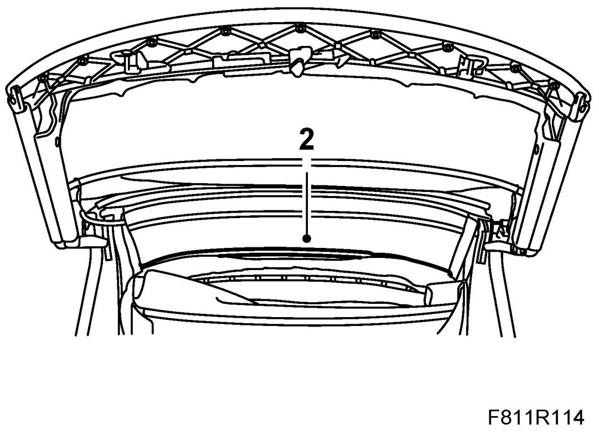
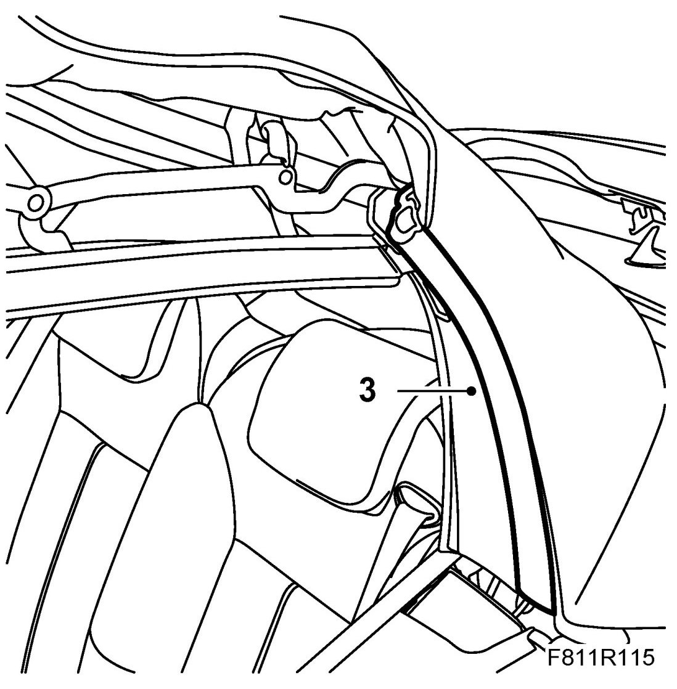
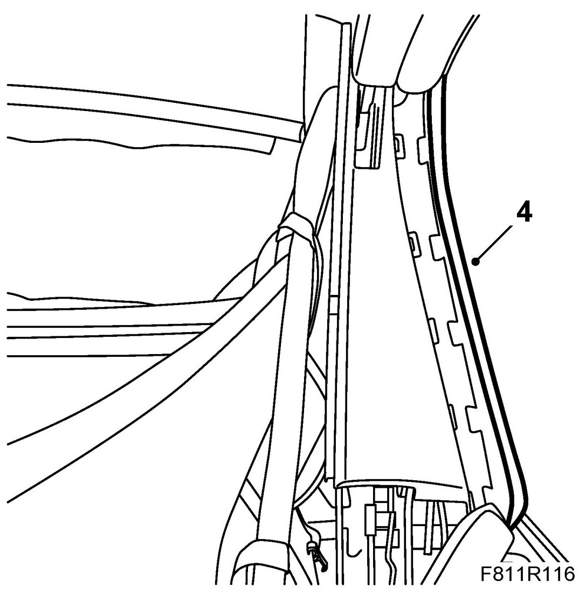
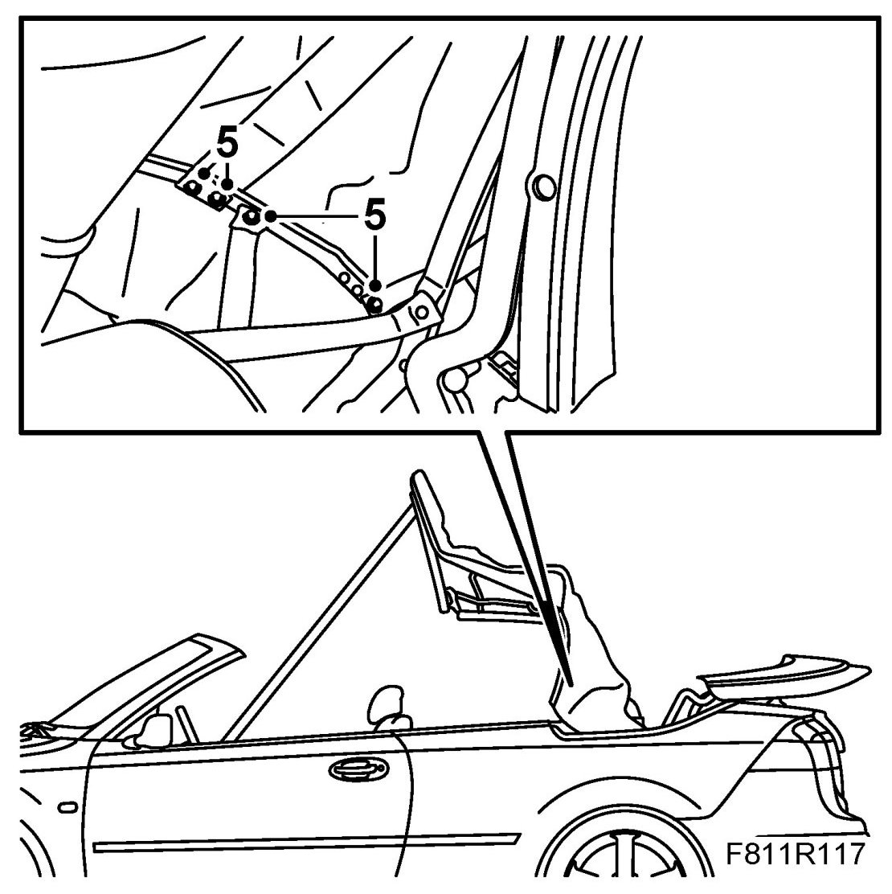
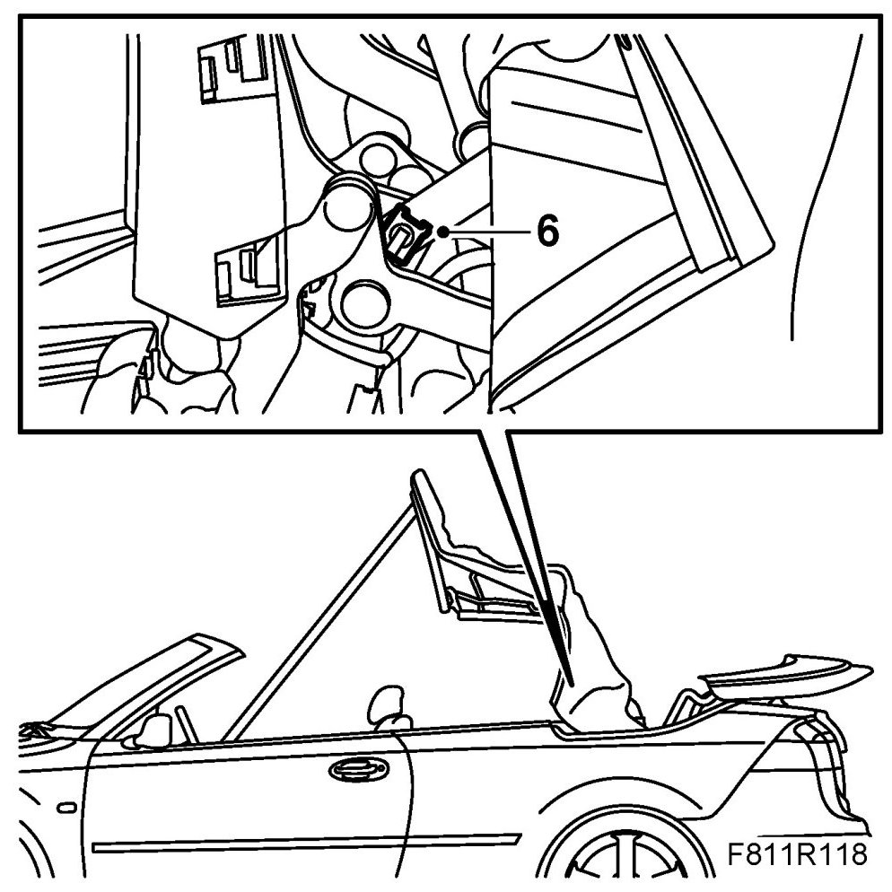
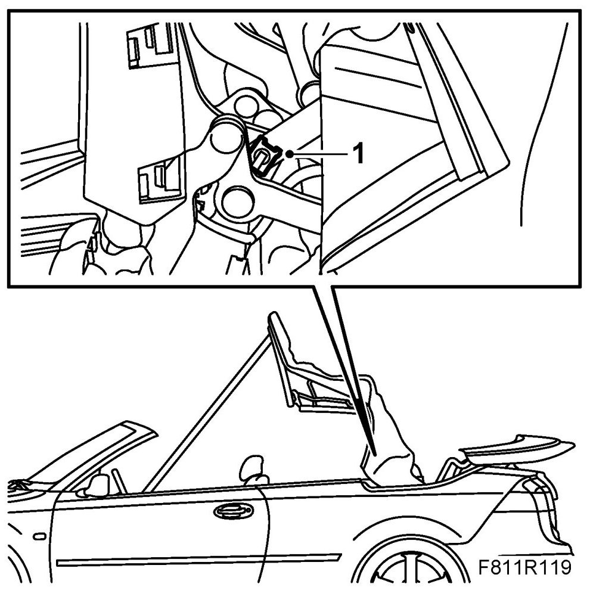
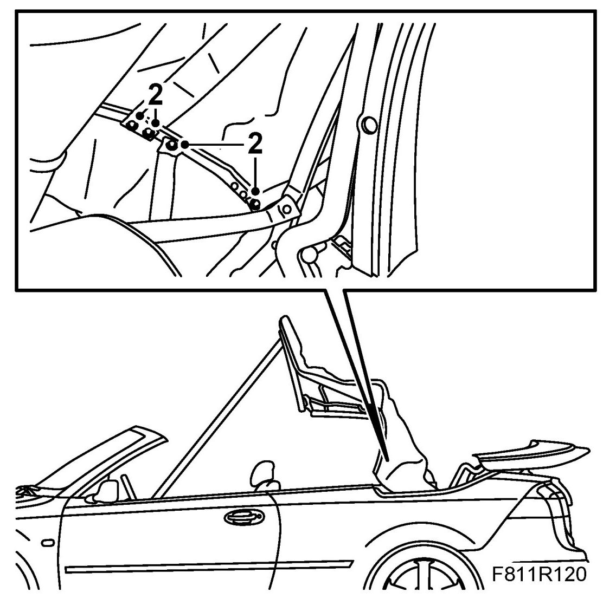
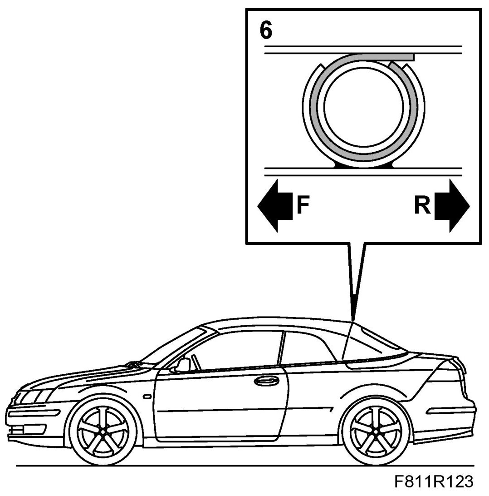
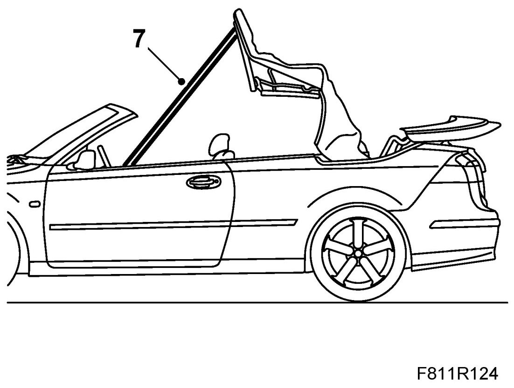

Fifth Bow
Fifth Bow
Removing
1. Remove the Headlining until the headlining plastic holder can be removed from the fourth bow.
2. Remove the outer roof from the fifth bow.

3. Remove the seal by pulling it out of the middle part of the U-shaped rail. Unhook the upper part of the seal from the fastener. Let the seal hang.

4. Unhook the outer roof attaching profiles from the rear rails.

5. Drill out the blind rivets for the fifth bow guide strap and cable.

6. Remove the lock clip and fastening pin for the fifth bow.

7. Remove the fifth bow.
Fitting
1. Fit the fifth bow fastening pin and lock clip.

2. Fit the fifth bow guide strap and cable with blind rivets.

3. Hook the outer roof attaching profiles to the rear rails.
4. Fit the rear rail seals. Hook the top part of the seal to the mounting and then press it into the rail.
5. Remove the soft top support and raise the soft top fully.
6. Affix new double-sided adhesive tape to the fifth bow. Fold the fabric tabs of the outer roof around the fifth bow. Observe the centre markings on the parts.

7. Operate the soft top half way down and secure it with the soft top support to prevent it falling down when the hydraulic pressure drops.

8. Fit the Headlining.